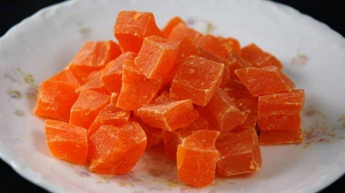

deskripsi
KALUA JERUK
Kalua jeruk adalah kuliner yang mulai sulit ditemukan. Terbuat dari cangkang jeruk bali, rasanya manis karena campuran gula merah atau gula pasir. Teksturnya unik, keras di luar dan lembut di dalam.

kembali